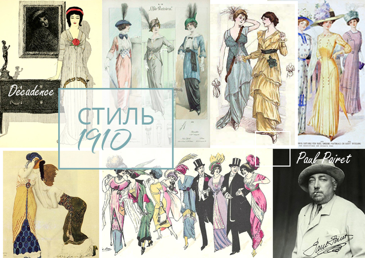
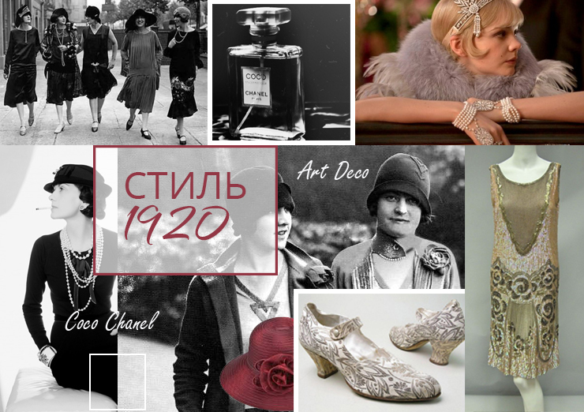
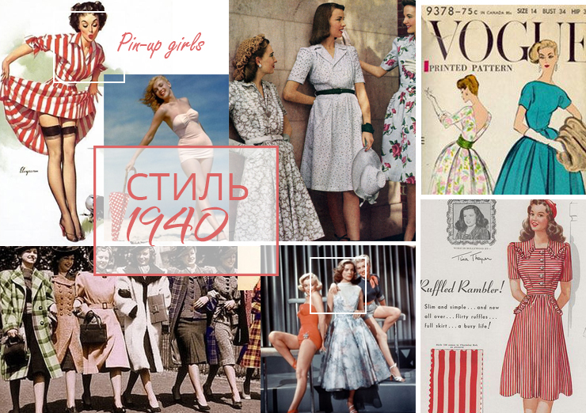
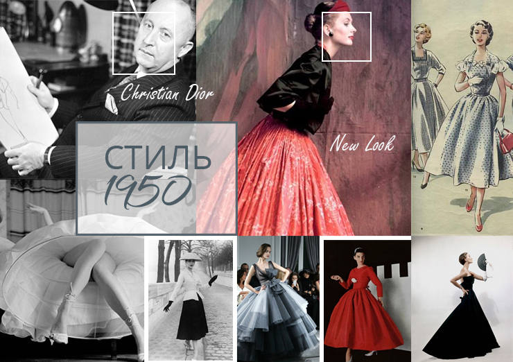
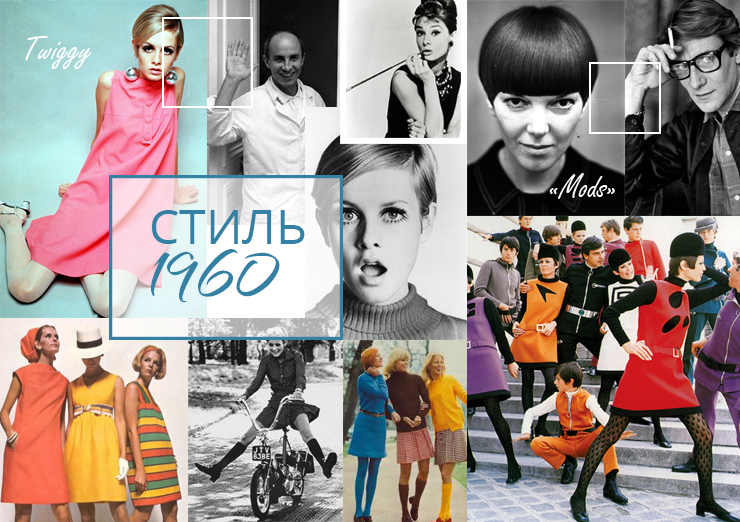
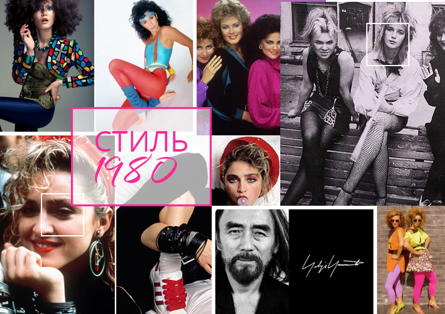
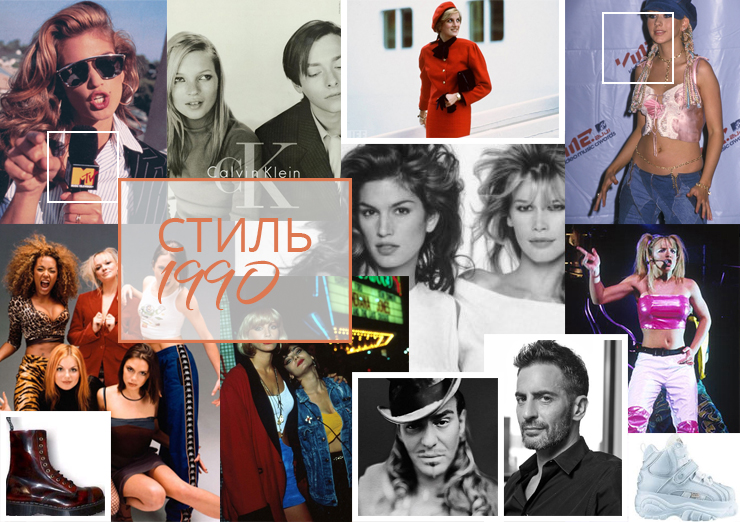

История моды: стили десятилетий в картинках
О понятии «стиль» можно узнать из совершенно разных источников: книги, интернет, журналы, фильмы. И, конечно, стилист или просто неравнодушный к моде человек, должен понимать не только отличительные черты каждого стиля, но и ориентироваться в истории, понимать характерные элементы в одежде каждой эпохи.
В это время мода являлась диктатом, существовали определенные правила внешнего вида (крой, длина юбки, стиль прически и пр.), которые должны были строго соблюдаться. И лишь с 60-х годов люди начинают стремится быть стильными, то есть не следовать диктату моды, а быть не похожими на других — появился так называемый «уличный стиль».
Дизайнером первого десятилетия 20 века можно назвать Поля Пуаре, который рискнул предложить женщинам избавиться от корсета и сделать выбор в пользу расслабленных, прямых силуэтов. Однако его идеи не прижились у дам того времени.
Пуаре работал в стиле «Арт Нуво», вдохновлялся «Дягилевскими сезонами», русскими костюмами, восточными мотивами и творчеством Леона Бакста. Создал «хромую юбку», которая отличалась тем, что была очень узкая снизу, что вызывало неудобства для женщин во время ходьбы.
20-е годы проходят в стиле «Арт Деко», название которого происходит от парижской выставки современных декоративных и промышленных искусств 1925 года.
Дизайнер этого времени: Коко (Габриэль) Шанель.
Характерные черты стиля 20-х годов: строгая закономерность формы, конструктивизм, футуризм, трикотаж, прямой силуэт, отсутствие корсетов, заниженная талия, шляпы, стиль «а-ля гарсон» («как мальчик»), ставший особенно популярным в конце 20-х.
Стиль десятилетия и дух того времени отлично переданы в нашумевшем фильме «Великий Гэтсби».

В 30-е годы мода напрямую связана с настроением общества и политической ситуацией в мире. В 1929 году произошел кризис банковской системы, процветала безработица. А в 1933 году приходят национал-социалисты во главе с Гитлером, наступает время Великой депрессии. На фоне нищеты и безработицы сверкают роскошью и изысканностью голливудские дивы, на которых мечтают быть похожими все женщины.
Дизайнер десятилетия: Адриан, который считается основателем «бельевого стиля».
Характерные черты стиля 30-x: голливудские дивы, Грета Гарбо, «фабрика грез», длинные платья из роскошных тканей, шикарные прически, красная помада, украшения пр.
Идет Вторая Мировая Война, все мужчины на фронте, а женщины ждут их дома, мечтая о мире. Многие модные дома в Европе закрываются, и немцы намерены перенести столицу моды из Парижа в Берлин. Из-за нехватки тканей Совет по вопросам производства издает Указ, ограничивающий использование тканей в пошиве одежды. В связи с этим юбки стали прямыми и мода стала более простой и лаконичной. Центром моды становится Америка.
Зарождается стиль Pin up («прикалывать», «плакат, прикалываемый на стену»), который является, скорее, стилем плакатов, чем одежды: яркие изображения красивых, полуобнаженных девушек, поднимающие настроение американским солдатам. Самые знаменитые модели Pin up: Бетти Пейдж, Мэрилин Монро и Бетти Грейбл.
Война закончилась, и наконец-то наступило время мира, надежды и радости. Женщинам вновь хочется быть шикарными, женственными, и они с радостью надевают корсет, который возродил Кристиан Диор в своей коллекции «New Look» 1947 года. Прямые силуэты с заниженной талией от Шанель отошли на второй план, и женщины облачились в диоровский «New Look»: женственный силуэт с пышной миди-юбкой и осиной талией, затянутой в корсет.
Безусловно, обычные люди не могли себе позволить такие шикарные наряды, и в начале 50-х годов в Великобритании зарождается субкультура «Teddy Boys»: выходцы с окраин, которые никогда не знали роскоши и просто подражали «золотой молодежи». Характерными чертами их стиля являлись элементы дорогого костюма, бабочка в стиле «вестерн», ботинки на толстой резиновой подошве, прямой пиджак-сюртук, узкие брюки с завышенной талией. Женщины либо копировали мужской стиль, либо заменяли брюки прямой юбкой, галстук — платком.
Послевоенные дети растут в достатке, любви и заботе, их называют «бэйби-бумеры». Зарождается субкультура Mods («моды»), девиз которой гласил: «Если у тебя чего-то нет, значит ты этого не хочешь». Эта субкультура схожа с современными хипстерами.
Появляются творческие профессии, такие как дизайнер, фотограф, маркетолог. Молодые люди стремятся добиться чего-то своими силами, живут целью, ключ к успеху для них — стопроцентная вера в себя. Развлекаются в клубах и употребляют «интеллектуальный» наркотик — амфетамин.
Параллельно с Mods возникает похожая субкультура: Psychedelic Mods (конец 50-х — нач. 60-х). Эти молодые люди заменили амфетамин на ЛСД, отчего и характерными чертами стиля этой субкультуры являлись гипертрофированная радость, безумные принты, кислотные цвета, иллюзии и странные формы.
Дизайнеры: Мэри Куант, Андре Куреж, Ив-Сен-Лоран
Характерные черты стиля 60-х: инфантильность, колледж-стайл, короткие стрижки, стрелки, детское лицо, образ девочки-подростка, baby-look, school girl, гладкое каре, мини-юбки, А-силуэт, геометрия, принт, цветные колготки, гольфы, воротнички.

Хиппи – это те же “бэйби-бумеры”, которые были отправлены на войну во Вьетнаме, к чему эти избалованные жизнью молодые люди были совершенно не готовы. Они хотели заниматься творчеством, быть ближе к природе, пропагандировали “свободную любовь”, отсюда и пошли всем известные “девизы” хиппи: “make love, don’t war”, “all you need is love”.
Главным событием стал рок-фестиваль Woodstock, прошедший с 15 по 18 августа 1969 года на одной из ферм в сельской местности городка Бетел и стал актом протеста против войны во Вьетнаме.
Характерные черты стиля 70-х: натуральные ткани, “деревенский” стиль, джинсы, небрежность, спутанные волосы, этника, цветочные принты, повязки на голове, длинные юбки, сандалии, клёш. Но не только стилем хиппи можно охарактеризовать это десятилетие, так как оно сочетало множество разных стилей: этно, романтика, фольклор, спорт, милитари, сафари, диско, унисекс, панк, классика.
В 70-е годы появляется понятие Pret-a-porter. Несколько раз в год в Париже проходили демонстрации готовой одежды, а с середины 70-х дизайнеры начали показывать свои коллекции и в других столицах (Токио, Милан, Лондон, Нью-Йорк и др.).
Дизайнеры: Соня Риккель, Кензо, Вивьен Вествуд.
Все то безумное и безвкусное, что можно себе представить – это стиль 80-х. В моде здоровый образ жизни, аэробика, подтянутое тело.
Характерные черты стиля 80-х: Т-образный силуэт, подплечники, мини, спортивный стиль, леггинсы кислотных цветов, “мокрая химия”, яркие тени, нанесенные до самых бровей, брюки-бананы, пайетки, стразы, боди, агрессивная сексуальность.
“Дорогой” стиль 80-х показан в культовом сериале того времени “Династия”: шикарные костюмы с подплечниками, объемные, сложные прически.
Романтичный стиль 80-х годов ассоциировался с иконой стиля того времени Принцессой Дианой и ее свадебном платьем, которое создали Элизабет и Дэвид Эмануэль из 40 метров роскошного шелка и старинного английского кружева.
Субкультуры: хип-хоп, готика, преппи
Дизайнеры: в разных слоях общества были востребованы такие бренды, как Versace, Giorgio Armani, Moschino, Chanel, Nike, Adidas, Vivienne Westwood, Yves Saint Laurent, Salvatore Ferragamo, Jimmy Choo, Manolo Blahnik, Jean Paul Gaultier.
Конец 20 века стал временем радикальных перемен в политической системе разных стран (падение Берлинской стены, распад СССР). И в моде тоже происходит некое переосмысление, размышления над тем, чего достиг мир к концу тысячелетия.
Знаменитые модели 90-х (Синди Кроуфорд, Линда Евангелиста, Клаудиа Шиффер, Наоми Кэмбэл, Кристи Тарлингтон, позже – Кейт Мосс) стали образцами для подражания, демонстрирующие все достижения индустрии красоты.
Появляется “интеллектуальная” одежда; разрушение привычных форм; стили авангард, футуризм и техно.
Дизайнеры: Gucci, Жан-Поль Готье, Givenchy, Calvin Klein, Hugo Boss, Марк Джейкобс, Donna Karan, Мартин Марджела и др.
Характерные черты стиля 90-х: гранж, Курт Кобейн, рубашки в клетку, рейв, минимализм, спортивный шик, Spice Girls, массивные ботинки “гриндерсы” разных цветов, спортивные штаны с заниженной талией, короткие топы, оголенный живот, мини, кроссовки, бейсболки, джинсы.
О моде нового тысячилетия говорить еще очень рано, однако ясно, что она во многом опирается на то, “что уже было”. Дизайнеры черпают вдохновение из стилей всех рассмотренных нами десятилетий, называют модными тенденциями то, что носили наши родители, бабушки и даже пробабушки. И даже субкультура “хипстеры”, ставшая популярной совсем недавно, – это возвращение движения Mods из 60-х годов. 2000-е – это очень быстрая смена модных трендов, смешение стилей, эксперименты.
1910

«Декаданс»
В это время мода являлась диктатом, существовали определенные правила внешнего вида (крой, длина юбки, стиль прически и пр.), которые должны были строго соблюдаться. И лишь с 60-х годов люди начинают стремится быть стильными, то есть не следовать диктату моды, а быть не похожими на других — появился так называемый «уличный стиль».
Дизайнером первого десятилетия 20 века можно назвать Поля Пуаре, который рискнул предложить женщинам избавиться от корсета и сделать выбор в пользу расслабленных, прямых силуэтов. Однако его идеи не прижились у дам того времени.
Пуаре работал в стиле «Арт Нуво», вдохновлялся «Дягилевскими сезонами», русскими костюмами, восточными мотивами и творчеством Леона Бакста. Создал «хромую юбку», которая отличалась тем, что была очень узкая снизу, что вызывало неудобства для женщин во время ходьбы.
1920

Эмансипация, «Арт-Деко»
20-е годы проходят в стиле «Арт Деко», название которого происходит от парижской выставки современных декоративных и промышленных искусств 1925 года.
Дизайнер этого времени: Коко (Габриэль) Шанель.
Характерные черты стиля 20-х годов: строгая закономерность формы, конструктивизм, футуризм, трикотаж, прямой силуэт, отсутствие корсетов, заниженная талия, шляпы, стиль «а-ля гарсон» («как мальчик»), ставший особенно популярным в конце 20-х.
Стиль десятилетия и дух того времени отлично переданы в нашумевшем фильме «Великий Гэтсби».
1930
«Гламурные годы»
В 30-е годы мода напрямую связана с настроением общества и политической ситуацией в мире. В 1929 году произошел кризис банковской системы, процветала безработица. А в 1933 году приходят национал-социалисты во главе с Гитлером, наступает время Великой депрессии. На фоне нищеты и безработицы сверкают роскошью и изысканностью голливудские дивы, на которых мечтают быть похожими все женщины.
Дизайнер десятилетия: Адриан, который считается основателем «бельевого стиля».
Характерные черты стиля 30-x: голливудские дивы, Грета Гарбо, «фабрика грез», длинные платья из роскошных тканей, шикарные прически, красная помада, украшения пр.
1940

«Женщина-соседка», Pin-up
Идет Вторая Мировая Война, все мужчины на фронте, а женщины ждут их дома, мечтая о мире. Многие модные дома в Европе закрываются, и немцы намерены перенести столицу моды из Парижа в Берлин. Из-за нехватки тканей Совет по вопросам производства издает Указ, ограничивающий использование тканей в пошиве одежды. В связи с этим юбки стали прямыми и мода стала более простой и лаконичной. Центром моды становится Америка.
Зарождается стиль Pin up («прикалывать», «плакат, прикалываемый на стену»), который является, скорее, стилем плакатов, чем одежды: яркие изображения красивых, полуобнаженных девушек, поднимающие настроение американским солдатам. Самые знаменитые модели Pin up: Бетти Пейдж, Мэрилин Монро и Бетти Грейбл.
1950

«Буржуазные годы», «New Look», Pin-up
Война закончилась, и наконец-то наступило время мира, надежды и радости. Женщинам вновь хочется быть шикарными, женственными, и они с радостью надевают корсет, который возродил Кристиан Диор в своей коллекции «New Look» 1947 года. Прямые силуэты с заниженной талией от Шанель отошли на второй план, и женщины облачились в диоровский «New Look»: женственный силуэт с пышной миди-юбкой и осиной талией, затянутой в корсет.
Безусловно, обычные люди не могли себе позволить такие шикарные наряды, и в начале 50-х годов в Великобритании зарождается субкультура «Teddy Boys»: выходцы с окраин, которые никогда не знали роскоши и просто подражали «золотой молодежи». Характерными чертами их стиля являлись элементы дорогого костюма, бабочка в стиле «вестерн», ботинки на толстой резиновой подошве, прямой пиджак-сюртук, узкие брюки с завышенной талией. Женщины либо копировали мужской стиль, либо заменяли брюки прямой юбкой, галстук — платком.
1960

«Бэйби-бумеры»
Послевоенные дети растут в достатке, любви и заботе, их называют «бэйби-бумеры». Зарождается субкультура Mods («моды»), девиз которой гласил: «Если у тебя чего-то нет, значит ты этого не хочешь». Эта субкультура схожа с современными хипстерами.
Появляются творческие профессии, такие как дизайнер, фотограф, маркетолог. Молодые люди стремятся добиться чего-то своими силами, живут целью, ключ к успеху для них — стопроцентная вера в себя. Развлекаются в клубах и употребляют «интеллектуальный» наркотик — амфетамин.
Параллельно с Mods возникает похожая субкультура: Psychedelic Mods (конец 50-х — нач. 60-х). Эти молодые люди заменили амфетамин на ЛСД, отчего и характерными чертами стиля этой субкультуры являлись гипертрофированная радость, безумные принты, кислотные цвета, иллюзии и странные формы.
Дизайнеры: Мэри Куант, Андре Куреж, Ив-Сен-Лоран
Характерные черты стиля 60-х: инфантильность, колледж-стайл, короткие стрижки, стрелки, детское лицо, образ девочки-подростка, baby-look, school girl, гладкое каре, мини-юбки, А-силуэт, геометрия, принт, цветные колготки, гольфы, воротнички.
1970
“Хиппи”
Хиппи – это те же “бэйби-бумеры”, которые были отправлены на войну во Вьетнаме, к чему эти избалованные жизнью молодые люди были совершенно не готовы. Они хотели заниматься творчеством, быть ближе к природе, пропагандировали “свободную любовь”, отсюда и пошли всем известные “девизы” хиппи: “make love, don’t war”, “all you need is love”.
Главным событием стал рок-фестиваль Woodstock, прошедший с 15 по 18 августа 1969 года на одной из ферм в сельской местности городка Бетел и стал актом протеста против войны во Вьетнаме.
Характерные черты стиля 70-х: натуральные ткани, “деревенский” стиль, джинсы, небрежность, спутанные волосы, этника, цветочные принты, повязки на голове, длинные юбки, сандалии, клёш. Но не только стилем хиппи можно охарактеризовать это десятилетие, так как оно сочетало множество разных стилей: этно, романтика, фольклор, спорт, милитари, сафари, диско, унисекс, панк, классика.
В 70-е годы появляется понятие Pret-a-porter. Несколько раз в год в Париже проходили демонстрации готовой одежды, а с середины 70-х дизайнеры начали показывать свои коллекции и в других столицах (Токио, Милан, Лондон, Нью-Йорк и др.).
Дизайнеры: Соня Риккель, Кензо, Вивьен Вествуд.
1980

“Чрезмерная пошлость” , Мадонна, “Интердевочка”
Все то безумное и безвкусное, что можно себе представить – это стиль 80-х. В моде здоровый образ жизни, аэробика, подтянутое тело.
Характерные черты стиля 80-х: Т-образный силуэт, подплечники, мини, спортивный стиль, леггинсы кислотных цветов, “мокрая химия”, яркие тени, нанесенные до самых бровей, брюки-бананы, пайетки, стразы, боди, агрессивная сексуальность.
“Дорогой” стиль 80-х показан в культовом сериале того времени “Династия”: шикарные костюмы с подплечниками, объемные, сложные прически.
Романтичный стиль 80-х годов ассоциировался с иконой стиля того времени Принцессой Дианой и ее свадебном платьем, которое создали Элизабет и Дэвид Эмануэль из 40 метров роскошного шелка и старинного английского кружева.
Субкультуры: хип-хоп, готика, преппи
Дизайнеры: в разных слоях общества были востребованы такие бренды, как Versace, Giorgio Armani, Moschino, Chanel, Nike, Adidas, Vivienne Westwood, Yves Saint Laurent, Salvatore Ferragamo, Jimmy Choo, Manolo Blahnik, Jean Paul Gaultier.
1990

Миллениум, Конец света, неопределенное будущее, поколение MTV
Конец 20 века стал временем радикальных перемен в политической системе разных стран (падение Берлинской стены, распад СССР). И в моде тоже происходит некое переосмысление, размышления над тем, чего достиг мир к концу тысячелетия.
Знаменитые модели 90-х (Синди Кроуфорд, Линда Евангелиста, Клаудиа Шиффер, Наоми Кэмбэл, Кристи Тарлингтон, позже – Кейт Мосс) стали образцами для подражания, демонстрирующие все достижения индустрии красоты.
Появляется “интеллектуальная” одежда; разрушение привычных форм; стили авангард, футуризм и техно.
Дизайнеры: Gucci, Жан-Поль Готье, Givenchy, Calvin Klein, Hugo Boss, Марк Джейкобс, Donna Karan, Мартин Марджела и др.
Характерные черты стиля 90-х: гранж, Курт Кобейн, рубашки в клетку, рейв, минимализм, спортивный шик, Spice Girls, массивные ботинки “гриндерсы” разных цветов, спортивные штаны с заниженной талией, короткие топы, оголенный живот, мини, кроссовки, бейсболки, джинсы.
2000, 2010
О моде нового тысячилетия говорить еще очень рано, однако ясно, что она во многом опирается на то, “что уже было”. Дизайнеры черпают вдохновение из стилей всех рассмотренных нами десятилетий, называют модными тенденциями то, что носили наши родители, бабушки и даже пробабушки. И даже субкультура “хипстеры”, ставшая популярной совсем недавно, – это возвращение движения Mods из 60-х годов. 2000-е – это очень быстрая смена модных трендов, смешение стилей, эксперименты.